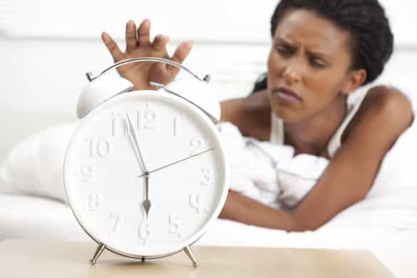
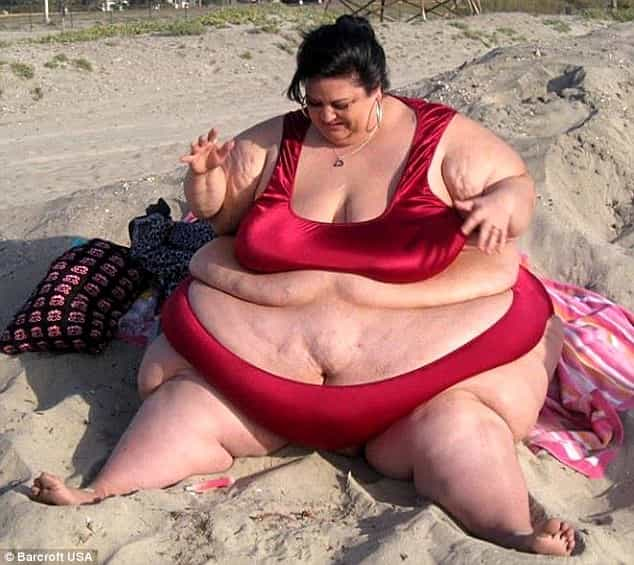

< < < Back
5 Reasons Why She’s Acting Desperate – Return Of Kings
I recently brought a woman home that was a little bit of a hipster. It’s not my usual pick but why not. Variety is the spice of life and all that. Red flags fell from the sky like rain when she began behaving desperately. Within one interaction she was ready to come to my place. It didn’t feel like it was because of an immediate urge to sleep with me. It felt like something else; like I was an opportunity in this girl’s game. Somehow I was being played. I couldn’t figure out why. It was enough that upon bringing her back, I didn’t sleep with her.
She didn’t want sex, she wanted something else. It felt like she was using sex as a weapon of some kind. That alone made me choose not to sleep with her. I called an Uber for her that night, and waited. I was not going to text her first. Two days later she texted me. She told me, “I can say three words right now that will make you never speak to me again.” My response was, complete curiosity. I had to know if her behavior correlated with this. I told her to tell me. She responded with:
“I have herpes”.
I hung up the phone, blocked her number, cleared my call history. She wanted to sleep with me so I would get herpes. Then I would be forced to love her. That’s what I believe she thought anyway. If I had given in, I’d be writing this post out of shame, not education. I was safe because it felt like something was wrong, and I didn’t ignore it. I listened to my gut, even though I wanted to get laid that night.
A desperate woman is an issue. It goes against female programming, and always has some sort of agenda attached to it. Below are five reasons why she’s acting desperate.
1. Secret STD
My story above. If she’s acting desperate, it’s because there is something about her that’s broken. If you aren’t escalating and she already wants sex, it’s a cloak and dagger. Even if you don’t see anything, you aren’t safe. Herpes and other diseases often can’t be seen, but can still be caught. Condoms can protect you, but the risk still exceeds the reward. There are seven billion people on earth. You can find one that isn’t afflicted with a lifelong condition. She wants you to become what she is. That way it cuts your options down from everything, to almost nothing. That almost nothing of course includes her.
If you begin to have apprehension about a woman because of a potential std, stop and head to google. One image search for “Male Herpes” will have you out of her house faster than if it was engulfed in flames. Remember the risk and think with your brain, not your head.
2. Biological clock

When the alarm begins ringing, there’s nothing she can do to stop it. It’s often too late. Feminism empowers the career woman while science teaches her she can have a kid later. This leads to women doing anything they can to become pregnant when the wall finally hits. This can surely happen in earlier years when her value is higher, 18-24, but tends to explode when the realization registers that she is close to losing the gift of a healthy child. You can assume anything after 27 is the danger zone. Women want to have children and a family at any cost. Sleeping with one of these woman has many dangers, but below are a few of them:
- Throwing a condom away, then using it to become pregnant. Always flush your condoms. Even if she says her plumbing can’t handle it. It’s a trap.
- Lying about being on birth control.
- Accidentally forgetting to take the pill.
- Poking a hole through her condoms. Always use your own.
- Says she would get an abortion, so you don’t need to wear a condom. Example Below.
3. She isn’t the online profile

I’m a typical beach girl
If you’re on Tinder or any other dating app you’ve surely came across this. You see a woman’s profile, then you see the angles. All of her photos advertise one angle. This is usually the face, the least disturbing feature. It’s hiding the true person that is morbidly overweight. If you’re gaming a woman online and the number comes far too easy, be cautious. Nothing is ever too good to be true.
A woman that looks like a model, and gives her phone number to you in the early stages of the interaction with almost no attraction built should concern you. It goes against all of women’s biological concerns to find the best mate at any cost.
Women screen men, compare them against other lovers, and discuss them with the hen pack. There is an entire television program that speaks about this issue known as catfishing. Remember, online you can be anyone, even if you’re an obese land whale. Seeing someone in person will always be better. There’s no guessing game that the girl you meet downtown is different than she appears. Emotionally, yes because everyone puts up a front. Physically you’ll be fine. The best way to protect yourself is to stay mentally agile through a proper morning routine. Here is the best routine I’ve found.
If you’re being aggressively pursued by a woman you’ve never met, it’s probably too good to be true and she’s lying to you.
4. She’s broke and in debt
I like him for his personality.
Men’s value comes from assets, and achievement. Therefore, when you drive to pick up your date in your nice Mercedes, you become a knight in shiny green armor. Green, because of your bank account being able to fix her problems. Women want money, but don’t have the drive or ambition to get it as strongly as men do. Men want money for the sake of accomplishment, women want it for merchandise.
This isn’t an inherently bad thing, it’s biology and where us as men have value. You should keep in your mind, that when you do become wealthy, women will be attracted to you for this alone. They are amazing at rationalizing their tastes for your money. She may hate redheads, but can deal with it if you have money. This can be used as a strength if you have work to do on yourself, or be led into spending your money for a woman that only wants an extra comma in her bank account.
A simple test to see this: take a woman out for drinks. You get the first round, ask her to get the next. It’s not about the money, it’s about her reciprocating value you give her. Watch how she reacts. If she throws a fit about it, drop her. You know why she is with you. If not, that’s a good sign. More tests will be needed however. Women are good at understanding when they’re being tested or evaluated.
5. Ex issues
Issues with an ex-boyfriend can put your life into serious danger. Women love to be safe and secure. This is why a strong, muscular physique can increase your attraction substantially. If she pushes for you to become official too quickly, it could be a sign she wants you to feel obligated for her protection, or her offense.
She may have an ex that’s dangerous to her and even more to you when photos of you begin to dominate her Facebook. Some women look at men as tools. You may be recruited to make another man jealous. This is not a safe place for either of you to be. You do not want to find a woman who only wants you to fight her battles. Those that put your life into danger even more so. Because it can most definitely happen to you.
If she’s acting desperate, you must protect yourself. In order to be safe you have to develop your self-control. You’re playing with a Venus fly trap. Keep your guard up, listen to your gut, and don’t ever betray the trust you have within yourself. It doesn’t hurt to ask other men for advice as well.
Read More: Facebook’s Newest Change Shows That Older Women Are Getting Desperate